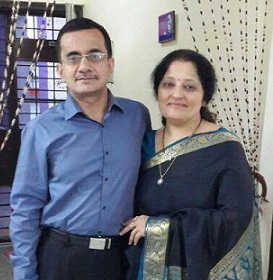
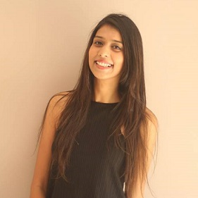
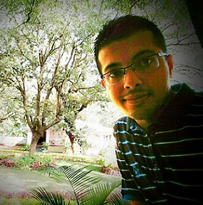

Mom and Dad
Je tu na farda ban , asa rul jana si!!!
You are the potters who beat as well as caress the clay to make beautiful utensils!
This acknowledgement is mere a formality, for no words can do justice to express my gratitude for the immense love, care and support you have always showered upon me. You are the people who work behind the scenes but the movie of my life is meaningless without your phenomenal direction!
The genes of composing poems came into me from my mother, who is a wonderful poet herself , but my talent was given a direction and consideration by my father, who has been a prime support in my formative years. The unconditional love of two of them motivates me to be a better person and do the best at what I do.
Surabhi Oberoi
Seed of one’s talent is often seen in those childhood days.What is required is an observant seer who sees through your thinking and actions!!
In my case, those pair of eyes belonged to you ma’am!
I can never thank you enough for bestowing me with your invaluable knowledge, time and efforts. You are and will remain my first motivator in this field. You showcased faith in me even when I was doubtful of my potential.
You have refined my writing bit by bit and brought it to this level where I can acknowledge and thank you for working upon me as your own child!!!
Thank you for being the best teacher, guide, friend, and motivator!!!!

Shivali Goel
Tu hai to I’ll be alright!!!
When your best friend is that Jack who knows all and is master of all , you ought to say the same !!!
Yes everyone , Ms Goel is the creative hand behind this page!
I am not okay with blowing your trumpets publicly but I am not left with another choice when you deserve them all. A budding IT engineer from prestigious Delhi College of Engineering, she sings extraordinarily well, paints at par with the professionals and bakes the best cakes. Well , I can count on fingers those left out set of talents that she is not bestowed with.
This dream of a blog is equally yours. I will try my best to do justice to this wonderful piece of work.
Thank you Shivali , for being there , always!!!

Surrii
Now this is definitely a world record!!! I have never said two lines of praise on your face, let alone writing about it. Strange things happen, don’t they?
Disclaimer: Don’t take the words written below to your heart, you may suffer a heart attack!!!
Well, this is the beauty of our relationship. We don’t need words when the underlying fact remains that we will be there for each other come what may. I can go on record saying that no matter how many fights we have, how much we love to irritate each other and how well you manage to embarrass me every single time, there is no one who can understand me better than you do. Though you are my personal troublemaker, yet there is an unusual incompleteness without you.
The tech guy behind my not so technical mind, my personal brother.
Suransh Chopra, thank you!!!!